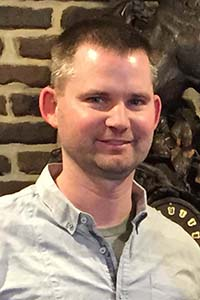

Marc Hauschildt
Marc graduated from the University of Northern Iowa in 2003 with a degree in Business teaching. Since 2004 he has been a high school business and computer science teacher at West Liberty High School. He is participating in the DeltaV Code School for professional development. He plans to take concepts learned back to his class and use them in personal projects. During the past month he expanded his knowledge of HTML, CSS and JavaScript, gained knowledge of GitHub and project workflow, and expanded his professional network by meeting many interesting people who are in the software development workforce.
.jpg "This is your bio pic if you want it") Dylan is currently a student of DeltaV Code School. He graduated with a degree in Game Design from Full Sail University in 2017 and plans on taking the skills learned from both to enter the work field in some sort of web/game design field. In just one month at Delta V he has gained knowledge in programming with HTML, CSS, and JavaScript as well as the usefulness of GitHub.
Dylan is currently a student of DeltaV Code School. He graduated with a degree in Game Design from Full Sail University in 2017 and plans on taking the skills learned from both to enter the work field in some sort of web/game design field. In just one month at Delta V he has gained knowledge in programming with HTML, CSS, and JavaScript as well as the usefulness of GitHub.